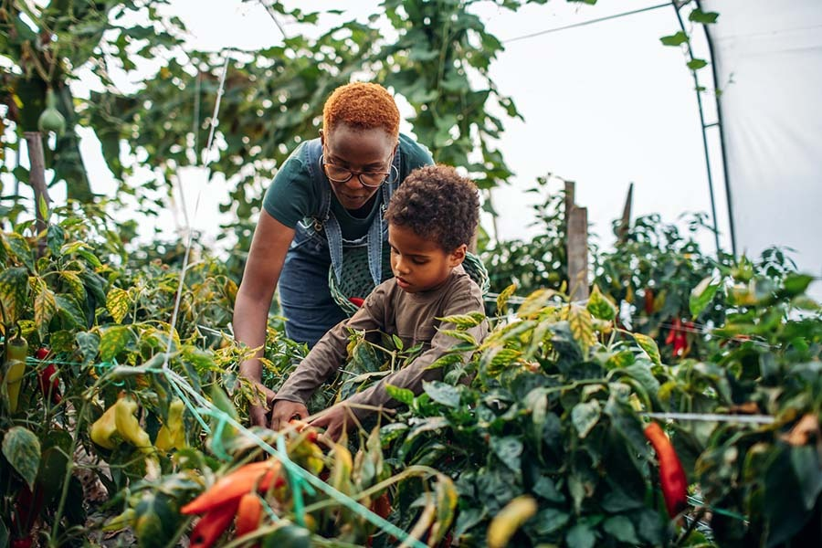

Lifelong Skills
These include knowledge of agricultural practices, animal husbandry, construction techniques, and self-sufficiency skills such as food preservation and energy production. Some essential resources for homesteading in Canada include land, water, and energy sources such as solar panels or split firewood access.